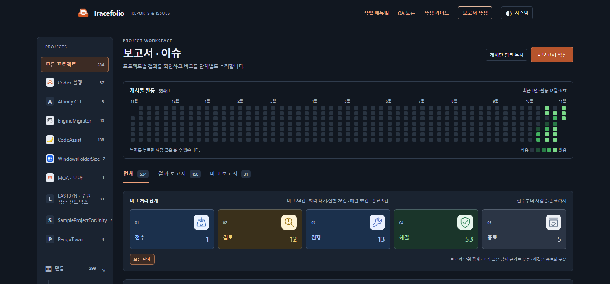
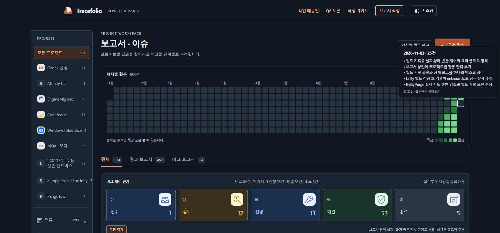

Codex 설정수정사항
Codex 설정수정사항잔디에 보고서 제목 미리보기·균일 간격 적용
완료날짜 칸에 마우스를 올리면 보고서 제목을 최대 5개 보여주고, 상하좌우 간격을 동일하게 맞췄습니다.
작업 결과
요청하신 제목 툴팁과 균일한 잔디 간격을 적용했습니다. 사이트 보기
변경 내용
적용 내용
날짜·건수와 보고서 제목을 최대 5개 보여줍니다. 더 많으면 나머지 건수를 표시하며 클릭하면 전체 글을 볼 수 있습니다. 프로젝트·검색 조건도 반영합니다.
가로 공간을 늘리던 space-between 설정을 제거했습니다. 셀은 정사각형을 유지하고 가로·세로 간격은 모두 3px입니다.
변경 전 — 가로 간격이 더 넓고 제목 미리보기가 없었습니다.

변경 후 — 균일한 간격과 날짜별 제목 툴팁을 확인할 수 있습니다.

검증
자동 테스트 48개·브라우저 검사 19개·공개 검사 5개를 통과했습니다. 실제 제목 일치, 빈 날짜, 최대 5개 표시, 화면 경계, Escape 닫기와 기존 날짜·프로젝트 필터를 확인했습니다. 공개 검증
남은 사항
전후 이미지는 같은 1500×700 화면의 직접 캡처이며 65,138 / 77,601바이트입니다. 이미지 편집·GIF 제작은 하지 않았습니다.
교훈 검토: 변경 없음 — 이번 셀 배치 수정은 프로젝트 소스와 실행 근거에 남겼습니다.
작업 시간
- 제안 시간: 5~8분
- 실제로 완료된 시간: 시작 2026-11-03 14:31:37 KST · 기능 공개 확인 2026-11-03T05:35:48.516Z · 최종 기록 배포 시각은 채팅에 표기
- XERJ: 미사용 — 제공된 XERJ 연결 없음 — 현재 소스와 CSS·브라우저 좌표로 검증